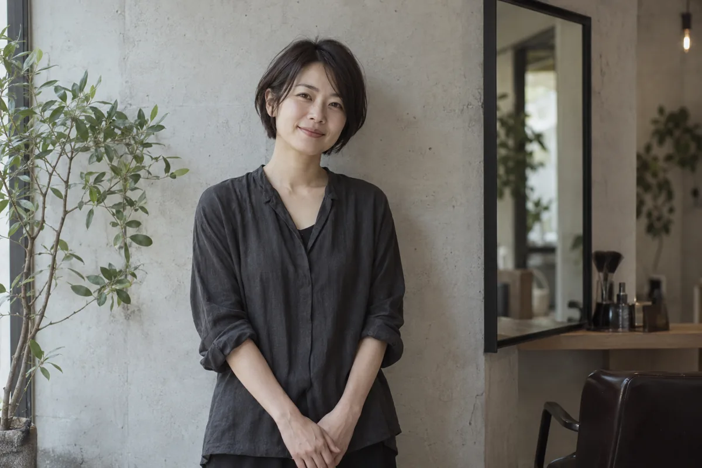

HAIR SALON / APPOINTMENT ONLY
髪を整える。
朝が、少し軽くなる。
いつもの服と、いつもの生活に合う髪へ。
乾かし方やスタイリングの時間から、
無理なく続けられる形を相談します。
nagi.

CUT / COLOR / CARE
01 / APPROACH
いつもの手入れから、考えます。
朝、髪にかけられるのは何分くらいですか。
結ぶことが多いですか。そのまま下ろしますか。
なりたい写真と同じくらい、普段の過ごし方も大切なヒントです。長さや色を決める前に、扱いにくいところをお聞かせください。
切った日だけでなく、次に来るまでのことも。ご自宅での乾かし方と仕上げ方までお伝えするサロンを想定しています。

STYLIST
相談から仕上げまで、
一人の担当者が。
スタイリスト 水野 なつき
短めにしたいけれど、結べる長さは残したい。カラーは変えたいけれど、明るすぎるのは困る。そんな迷いも、鏡の前で一緒に整理します。
長さ・色・料金を確認してから施術へ。最後に、ご自宅での乾かし方をお伝えします。
氏名・紹介文は制作サンプル用の設定です。
担当者に相談して予約する →